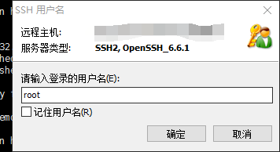

一、购买阿里云6个月试用，9.9很划算
作为一个前端开发且励志做全栈的开发者，怎能不知道服务器呢？虽然以前确实没碰过，但是难得阿里云9.9试用6个月，不为别的，就为了让自己学到服务器搭建网站相关知识也够了，有付出才有回报！
二、先下载个Xshell
三、进入实例详情，基本信息里面点击更多选择重置密码，重置完成重启
四、打开xshell，点击新建会话(记住用户名输入root,默认的是这个，如果你没改的话)

五、应该成功了
2018-01-08补充,之前一直懒,现在因为要做自己的degree项目才想起来要用服务器
六、服务器上安装java环境
主要看：https://jingyan.baidu.com/article/cb5d6105f4c2ae005c2fe083.html
还有 http://blog.csdn.net/little_shengsheng/article/details/78758512
百度教程这个讲的算上比较全的了,但是还是有坑要踩。另外博客这个一样有坑要踩。
第一、我得自己把对应我服务器系统的jdk包下载下来。我服务器选的是linux,正好同事之前装过就直接用他的了。如果没有的话就需要去官网找了。我的版本是 jdk-8u151-linux-x64.tar.gz。(去官网找的话可以参考那个博客的步骤。)
我一开始的操作跟博客上的步骤类似,同时用了xftp和XShell。
然后一直卡在输入命令这里,它总是报找不到文件。我就纳闷了,不论百度教程还是博客都没有详细的说放在哪里。而我又不懂,只能干瞪眼浪费时间,突然今早通了,然后就搞好了。
其实百度教程里面的意思是在usr文件夹下新建java文件夹,然后在java文件夹下新建jdk和tomcat两个文件夹。这里的步骤是需要我们cd usr/进入usr文件夹的。
它的第四步然后在最初的SSH命令行界面输入如下命令：tar zxvf jdk-7u67-linux-x64.tar.gz -C /usr/java/jdk,这句话的意思是需要我们
cd ..回到一开始的root文件夹下,同时把jdk安装包放在root文件夹下。(不能放错位置)
然后继续跟着它的教程操作。还有一个坑在编辑profile文件以及退出保存这里。如果不懂命令行的人是完全没头绪的。
当按下vi profile时,我的命令行界面会有一串提示信息,回车即可。
然后按任意键,可以看到命令行界面最下面出现INSERT,表示可以编辑了,跟着教程在最底部敲打命令即可。
敲完了怎么保存呢?按Esc键退出,然后按:wq保存并退出。继续跟着教程敲就OK了。
PS:这里还有一个注意点,我自己电脑上的jdk包安装后我改了它的名字,后来我都不知道我本地的java环境怎么配好的。最好不要改jdk包的名字。改了的话那么在环境变量配置的时候就要注意了！！！
上面的
jdk1.8.0_112是jdk包解压后的文件夹名字。切记！/usr/java/jdk/jdk1.8.0_112这个是解压后的包存放的地址,我没建jdk文件夹并且我的包名和它不一样,所以我的是/usr/java/jdk1.8.0_151
至于那篇博客的教程,关键地方有点问题了。内容与图不符。
它的图上显示的是jdk包放在了root/softs文件夹下,且版本号是jdk-8u151-linux-x64.tar.gz,一开始我看到了很激动,跟我完全一模一样,终于可以直接抄了。还没抄几步就发现,窝草,命令行怎么是tar -zxvf jdk-8u60-linux-x64.tar.gz,果然敲下去告诉我找不到。。。
这边又要注意了,它的命令行里面的jdk版本号与图中不符!
其实
tar -zxvf jdk-8u60-linux-x64.tar.gz这个命令是解压jdk-8u60-linux-x64.tar.gz这个压缩包,如果是从官网下载下来的,那么这个压缩包名字其实就是对应的jdk版本号,如果你改名字了,那就要改成对应的名字,但是尽量不要这么作!
还有一个问题,一定要在放有jdk安装包的文件夹使用这个解压命令,不然当然找不到文件了。。。
比如我把jdk包放在了usr/java文件夹下,所以我要 cd 到该文件夹下才能使用这个命令。
七、服务器上安装tomcat
发现个挺全的：https://yq.aliyun.com/articles/44554
但是注意有个坑,阿里云服务器上的防火墙改为firewalld了,不是iptables,这个坑我踩了好久。
开放8080端口及以下的步骤可以不用看了,它是针对iptables防火墙的。
测试看：https://help.aliyun.com/knowledge_detail/59367.html
我启动了tomcat发现没有报错,但是就是一直访问不了,后来参考http://blog.csdn.net/qq_28336351/article/details/74665130 ,在阿里云安全组进行了设置,还是不行。然后我关闭防火墙发现能访问了。但是这样是不好的,所以我一直在找why和how？
这个坑真的烦啊,虽然做独狼不好,但是没人遇到过只能自己去解决。
好吧,同事也是关着的,我也没辙了,只能看给阿里提工单问他们why了。。。
阿里云的回复：这是因为防火墙开启,如果没有做相应的安全策略,防火墙会默认将您相应协议认为不安全协议；给阻止掉了。
您好：关闭防火墙；您安全组里面可以做相应的限制；如果您不懂防火墙这块；要是添加防火墙规则很复杂；并且您每当搭建一个服务都需要在防火墙里面做相应的安全策略；关闭防火墙不会受到多大影响谢谢。
八、服务器上安装mysql
安装mysql这里也是大坑,真的,第一次接触服务器的新手慢慢踩吧。我也是找了半天才找到这个教程的
https://jingyan.baidu.com/article/454316ab67bd02f7a7c03af4.html
https://www.cnblogs.com/daacheng/p/7565322.html
但是如果是完全小白看这个教程还会卡住,我说下我卡住的地方：
第5步,配置mysql这里。
我输入了
mysql_secure_installation命令后发现紧接着提示set password之类的,我以为是要我输入,然后不管我怎么按键,始终没有东西显示,这边我都想了十几分钟,我在想为什么按键不显示,后来偶然重敲这个命令后直接回车居然有用,我日,也就说说这里不设置密码也没事。
第7步,设置mysql这里
我输入了mysql -u root -p也进入了mysql,发现开头是mysql>和教程上不一样,然后按了help也没发现insert命令行,我在想又TM坑了。果不其然,直接输入百度教程上的命令报错,ERROR 1364 (HY000): Field 'authentication_string' doesn't have a default value,很心痛,后来发现有个类似的报错,只是变量名不一样,就打开看看照着改了,结果解决了。
解决来源：https://www.cnblogs.com/joeblackzqq/p/4526589.html
主要是他最后的话,mysql配置文件里面启用了严格模式,所以才会报错。
忘了说了,一开始登陆进去建表的时候,我又报错了,说期望43个实际才42个,然后让我用mysql_upgrade,肯定不懂啊,继续百度。。。
找到解释：错误是由于你曾经升级过数据库，升级完后没有使用
mysql_upgrade升级数据结构造成的。
解决方法：root@localhost ~]# mysql_upgrade -u root -p 13456
还有…
使用uodate命令时报No Database Selected错误,很明显,没有这个表。但是不应该啊,mysql安装好会自带几个库,然后仔细看insert命令,它insert的是mysql.user,那么是不是我这边update也应该对应mysql.user呢？试了下果然如此：UPDATE mysql.user SET Password=PASSWORD('你准备设置的新密码') where USER='root';
还是第7步,最后一句
user表中 Host列 ‘localhost’ 改成 ‘%’ (也可以是固定ip、本地登陆localhost、%指不限登陆地址)
我本地用Navicat连接,没用,报错：access denied for user root @我服务器ip(using passworad yes),然后我就一直百度啊,一直不知道怎么办,试了很多方法。
其中有一个方法,我把user表里面的HOST列的刚刚插入的值及localhost改为了%,结果使用mysql -u root -p也登不上去,报错：ERROR 1045 (28000): Access denied for user 'root'@'localhost' (using password: NO),由于我先前一直都输输入命令直接回车就能登上数据库了,这次一样什么都没输,结果直接说using password: NO,一开始我也看到了这个变化,心想糟了,密码输了也没用啊,按键又不显示。
但是,实在找不到方法了,想了很久,乱按一通,结果它报错：
ERROR 1045 (28000): Access denied for user 'root'@'localhost' (using password: YES),TMD,变了,也就是说我输的密码虽然没显示但是有,卧了个槽了,然后输入我的密码,MMP,成功了。fuck!
至于Navicat不能连接数据库以及直接使用mysql -u root -h 我服务器ip -p也无法登录我还在研究。其中有个授权问题,附链接：http://blog.csdn.net/iw1210/article/details/54646093
好吧,我使用mysql -u root -h 我服务器ip -p能连接了,但是本地Navicat还是不行。
我登陆mysql后使用授权
grant all privileges on *.* to 'root'@'我服务器ip' identified by 'lizz214856' with grant option;on;,然后使用flush privileges刷新就能登了,具体是看 http://blog.csdn.net/u010235716/article/details/50393941 上的讲解才知道。
老纸搞定了！！！我真的快哭了,眼里含着泪,但我是男人,不能让它滴下来,我草拟大爷,做男人真累！！！
还是要感谢我师父,听君一席话胜读十年书！
他说你可能设置了禁止远程连接,我一想,卧槽,真的！TMD,百度教程里一开始就设置了。
好吧,退出来使用mysql_secure_installation命令,然后会问你密码之类的,输入即可。我只需要改可以远程连接而已,修改密码就无所谓了,这步操作完了,我继续重启mysql还是没用,我就操蛋了！然后百度上改变问问题的姿势,变成了：本地连接服务器上的mysql报错,然后第二个就是人家的回答：
你服务器数据库的root用户权限够么？是不是服务器上的root用户只能本地连接？将root用户连接权限全部打开。
GRANT ALL PRIVILEGES ON . TO ‘root’@’%’ identified by ‘175102748’ WITH GRANT OPTION;
我仔细看了看,它这里是
'root'@'%',而我好像是'root'@'我服务器ip',貌似百度教程上也说了,%对应的是不限登录地址,其实人家早就说了,只是言简意赅,智商不够的人自然看不懂。。。。。。蓝瘦香菇。。。。。。